양식마다 반복되는 개발
결재 종류가 늘 때마다 화면·검증·저장 로직을 복제하면 변경 비용과 오류 가능성이 함께 커집니다.
전자결재, 인사·근태, 프로젝트, 메일, 차량, 계약과 일정을 분리된 도구가 아닌 연결된 업무 데이터로 다루고, 로컬 AI 문서 검색과 명함 OCR·AI 구조화까지 제품 안에 통합했습니다.
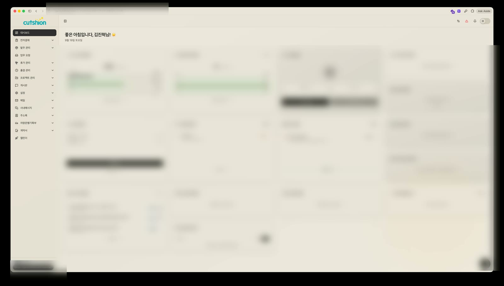
결재 문서, 근태 기록, 프로젝트, 계약과 일정이 서로 다른 기준으로 관리되면 같은 정보를 반복 입력하고 상태를 다시 확인해야 합니다. 요구사항 정의부터 데이터 모델링, 풀스택 개발, 테스트, 온프레미스 배포와 운영까지 맡아 업무의 시작과 완료가 한 시스템 안에서 추적되도록 구축했습니다.
결재 종류가 늘 때마다 화면·검증·저장 로직을 복제하면 변경 비용과 오류 가능성이 함께 커집니다.
휴가, 근태, 프로젝트, 계약, 차량 기록이 따로 움직이면 승인 이후에도 수작업 동기화가 남습니다.
브라우저에서 계산한 값만 저장하면 조작이나 구현 차이로 회계 데이터의 무결성을 보장하기 어렵습니다.
사내 문서 검색과 요약에 외부 AI API를 사용하면 접근권한과 정보 반출 문제가 생길 수 있습니다.
상신, 중간 승인, 최종 승인, 반려 과정에서 문서와 연결 업무의 상태가 함께 맞아야 합니다.
온프레미스 환경에서도 테스트부터 배포까지 같은 절차로 반복할 자동화가 필요했습니다.
사용자 경험, 도메인 규칙, 데이터·AI 계층을 분리해 각각 독립적으로 검증하면서도 결재와 권한 흐름 안에서는 하나의 제품처럼 동작하도록 구성했습니다.
좌우 버튼, 하단 인디케이터 또는 키보드 방향키로 화면을 넘길 수 있습니다. 모든 이미지는 개인정보와 사내 데이터를 식별할 수 없도록 별도 사본에 블러 처리했습니다.
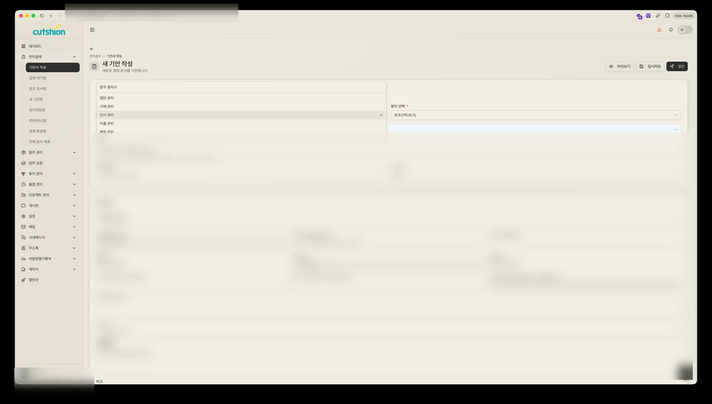
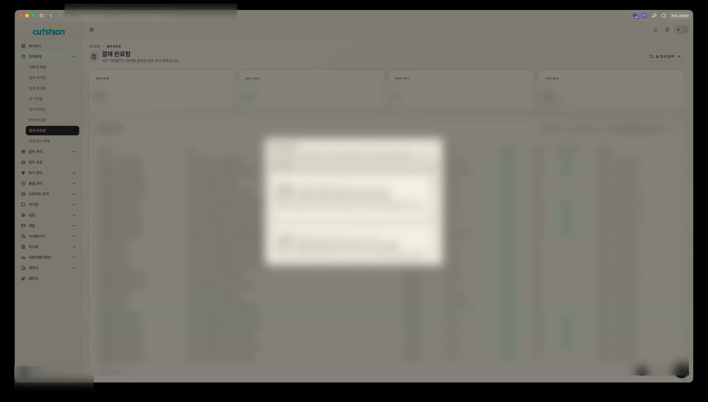
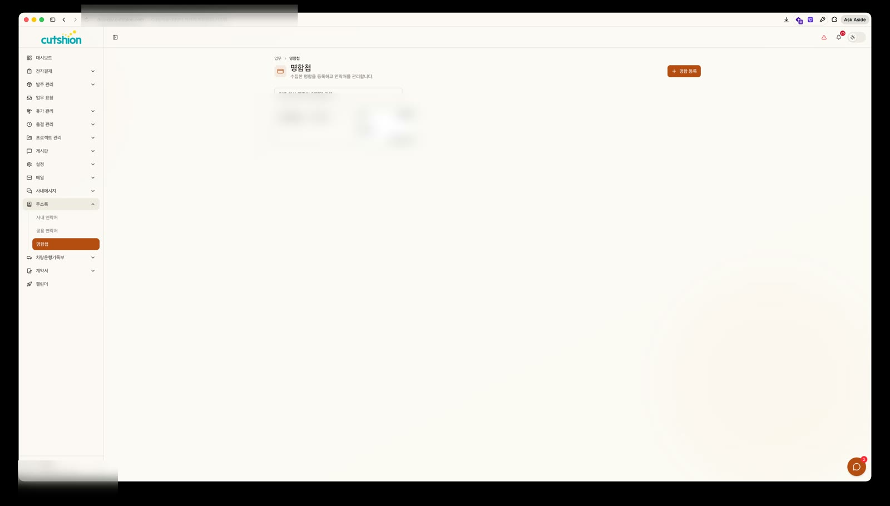
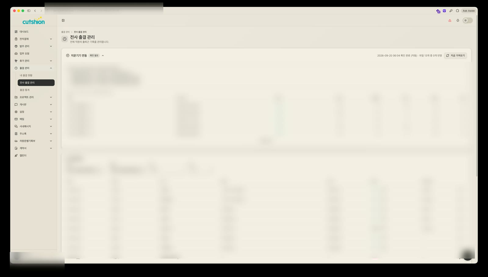
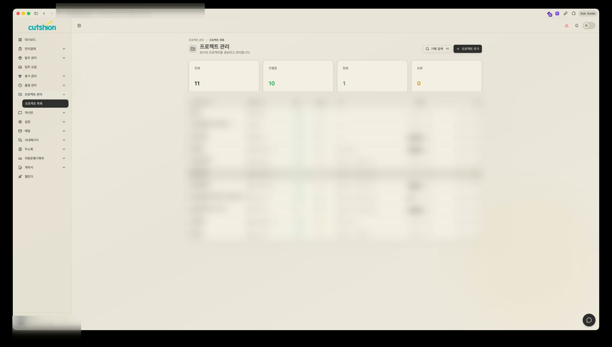
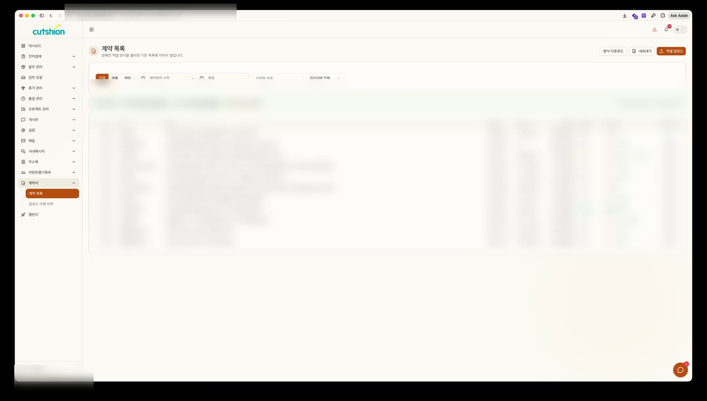
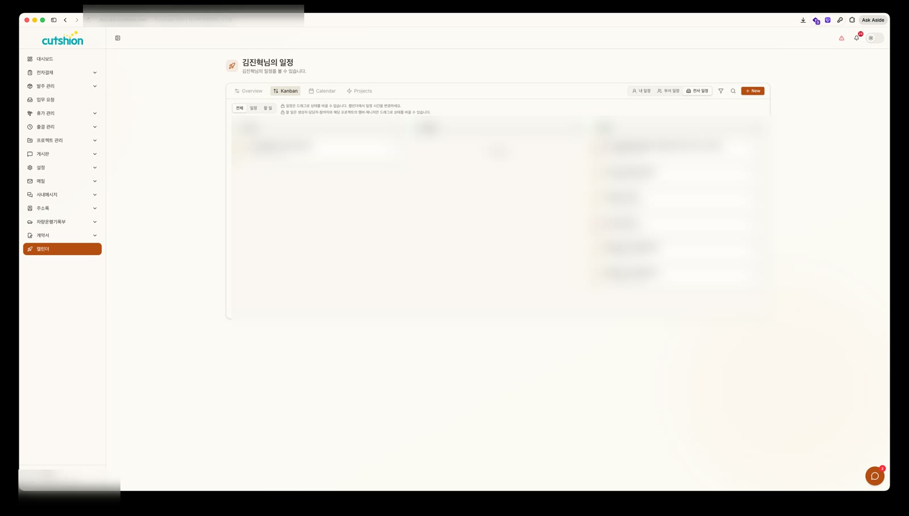
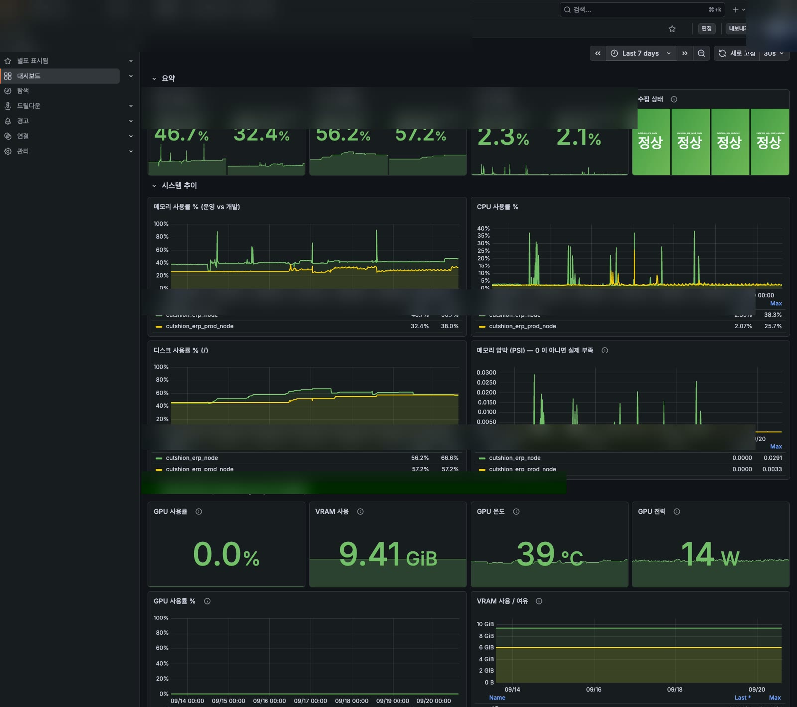
Privacy note — 원본 스크린샷은 포트폴리오에 포함하지 않았으며, 브라우저 주소·사용자 정보·업무 데이터 영역을 비가역적으로 흐린 축소 사본만 사용했습니다.
카테고리 버튼으로 필요한 기능만 골라 볼 수 있습니다. 인쇄 시에는 전체 카드가 자동으로 표시됩니다.
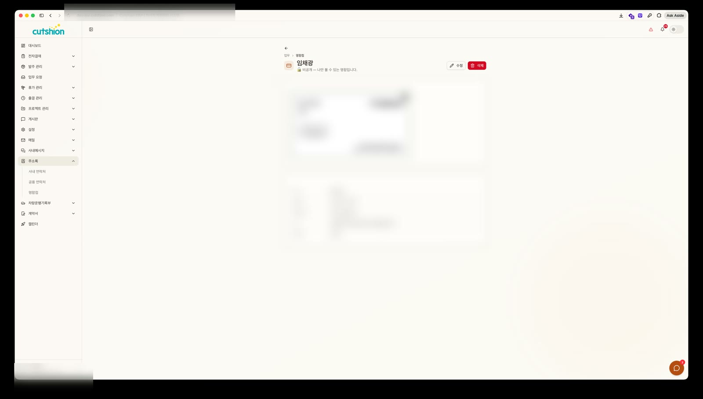
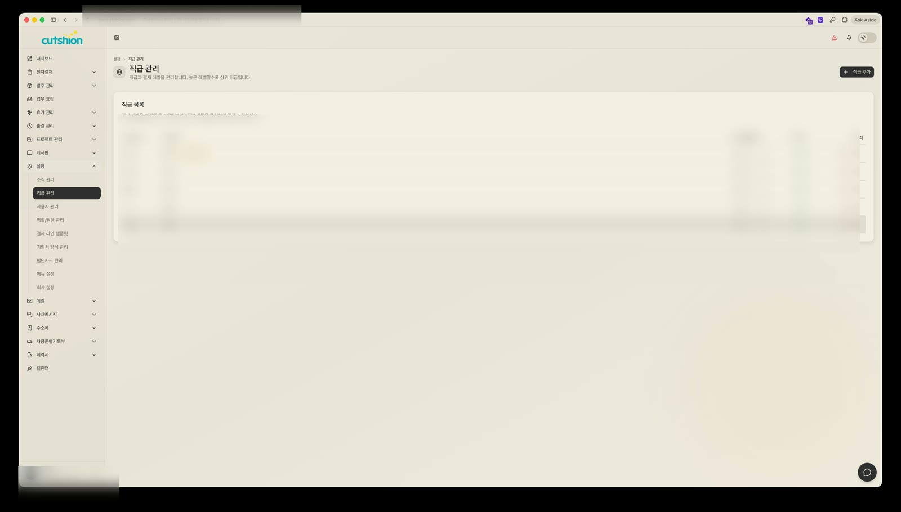
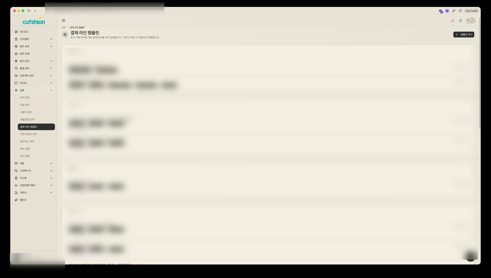
ERP 본체와 AI 추론 서버의 역할을 분리하고, 서비스는 외부 리버스 프록시를 통해 제공하되 DB·OCR·LLM 계층은 필요한 범위에서만 접근하도록 구성했습니다.
회사 내부 Proxmox VM에 운영과 개발 스택을 분리해 변경과 장애의 영향을 격리했습니다.
웹과 API는 TLS 리버스 프록시로 제공하고, DB와 OCR은 내부 네트워크, LLM은 Tailscale 사설망에서만 접근합니다.
CPU, 메모리, 디스크, 컨테이너 자원과 GPU·VRAM·온도·전력 지표를 같은 운영 화면에서 추적합니다.
Security note — 조직명, 호스트 식별자와 내부 인프라 정보는 포트폴리오용 이미지에서 마스킹했습니다.